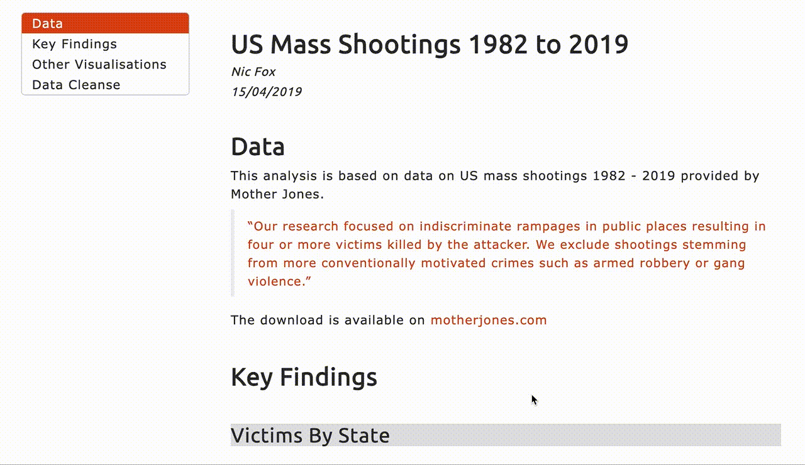

Home
Papers
About
Tutorials and Teaching Materials
Data Visualisation Examples in R (US Mass Shootings)
An analysis of US mass shootings between 1982 and 2019, including a variety of data visualisations, written in R.

Analysis
|
Code
See more learning materials